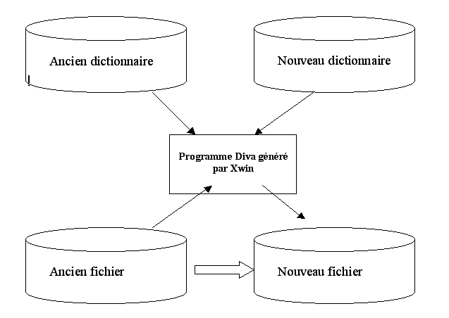

Xwin permet de générer des moulinettes, c’est à dire des programmes Diva, qui permettent de transformer les fichiers d’une version à une autre.
Lors du changement de version d’un applicatif, des tables ont certainement été modifiées, par l’ajout de nouveaux champs, par le changement de la taille de certains champs etc. De ce fait la version des fichiers a été modifiée, et les anciens fichiers ne sont pas compatibles avec la nouvelle version de l’application.
Pour que la nouvelle version de l’applicatif puisse être installée, il est alors indispensable de mouliner les fichiers pour qu’ils soient conformes à la nouvelle description du dictionnaire.
Xwin va donc comparer l’ancienne et la nouvelle version du dictionnaire et générer des programmes (un par fichier) permettant la mise à jour des fichiers.

Attention !
Pendant la phase de génération du programme Diva, une liste d’erreurs et d’avertissements est imprimée. Il est impératif d’examiner de près l’intégralité de cette liste AVANT d’exécuter la moulinette. Dans certains cas, la moulinette pourra être lancée telle que, dans d’autres cas plus complexes, vous serez amenés à modifier le programme Diva généré.
L’ancien fichier doit correspondre exactement à la description faite dans l’ancien dictionnaire.
Lors de la mise à jour de Divalto, les moulinettes de conversion des fichiers sont toujours livrées. Vous ne devez pas utiliser le générateur de moulinette pour passer d’une version de Divalto à une autre.
Par contre, si vous faites des modifications dans votre dictionnaire de surcharge, et que ces modifications nécessitent de mouliner les fichiers, vous pouvez utiliser le générateur de moulinettes.
Dans ce cas, l’ancien dictionnaire pour la moulinette sera le nouveau dictionnaire Divalto avec votre ancienne surcharge, et le nouveau dictionnaire sera le nouveau dictionnaire Divalto avec votre nouvelle surcharge.